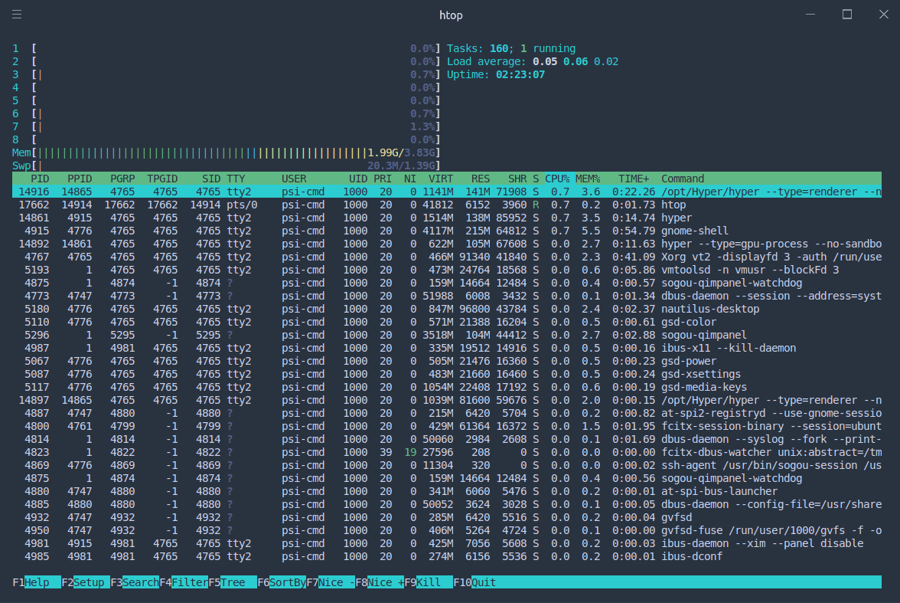
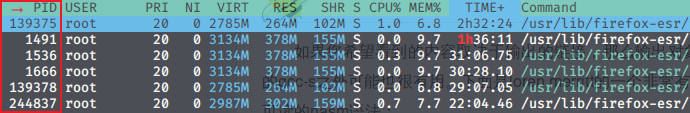
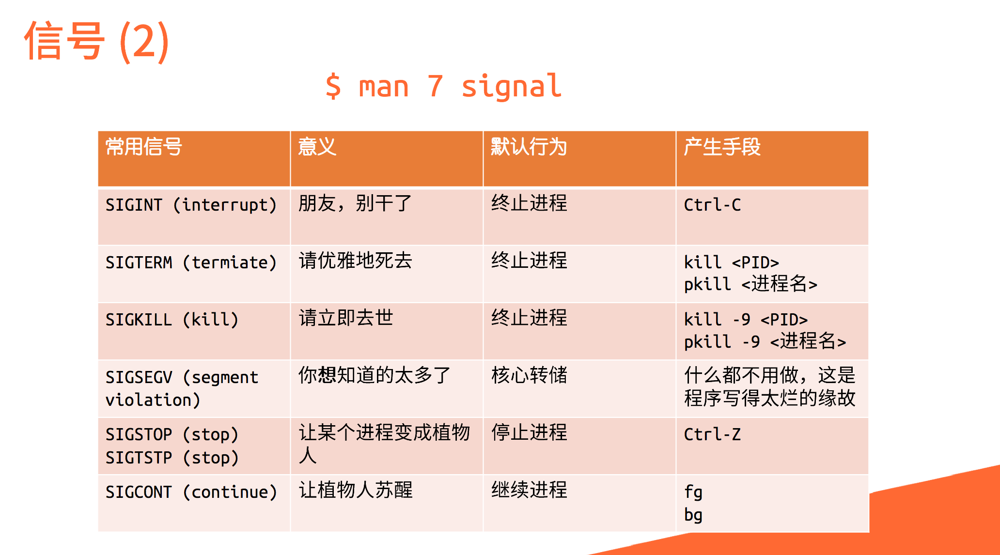
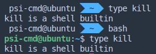
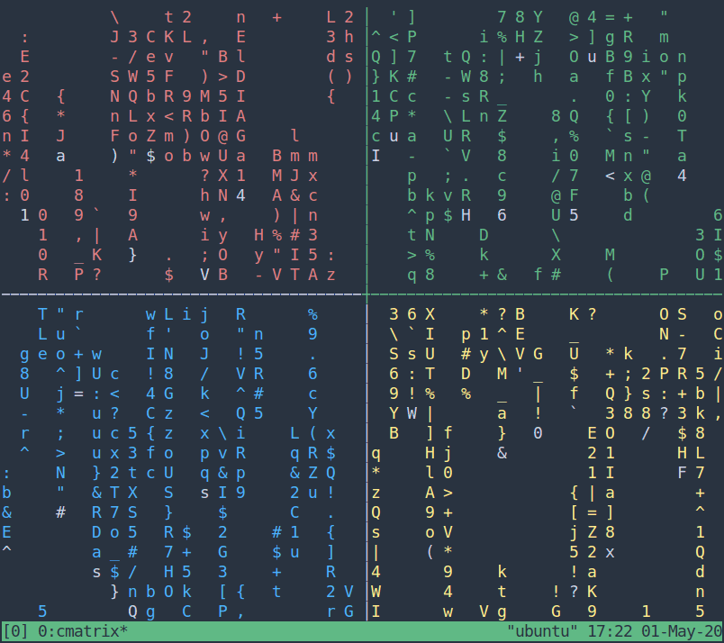
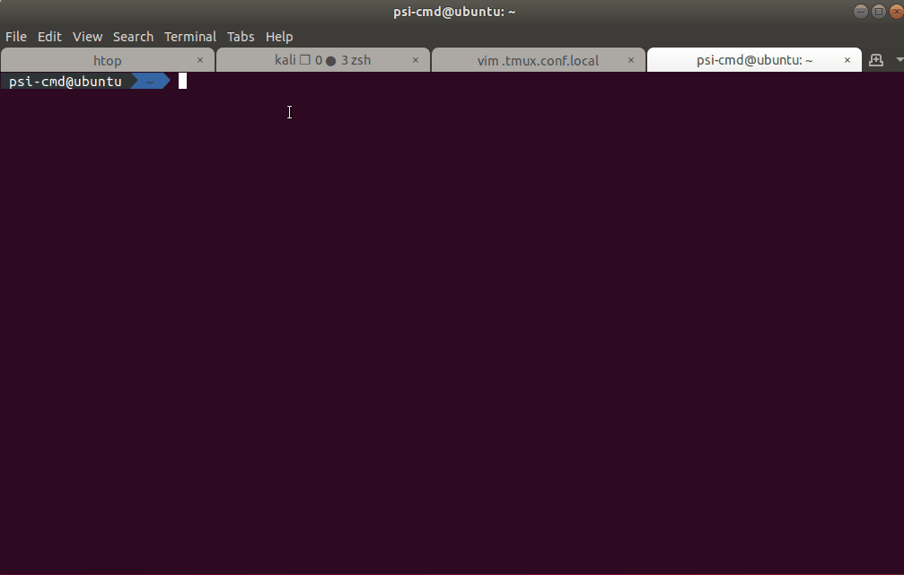
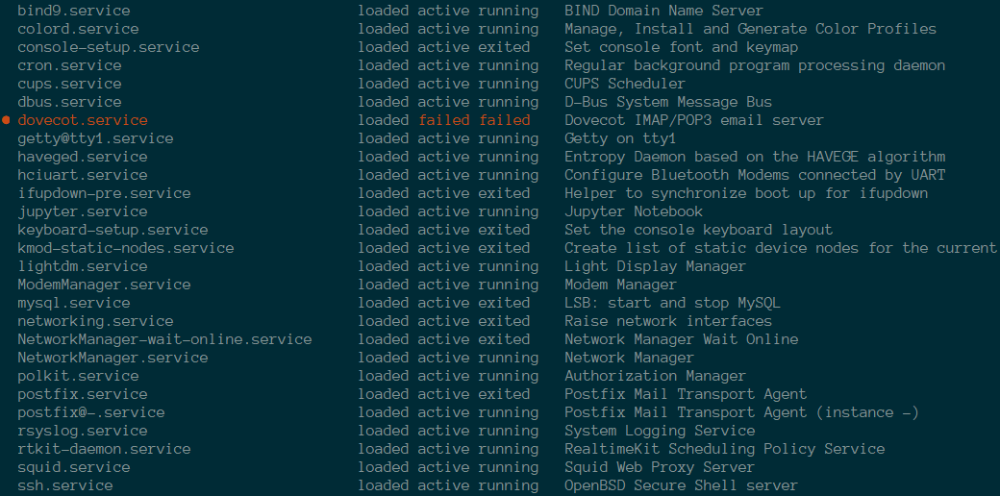

进程、前后台、服务与例行性任务¶
本文已完稿并通过审阅，是正式版本。
导言
在你的 Linux 系统中运行着很多东西：包括桌面环境、浏览器、聊天软件、办公软件、游戏、终端，以及后台运行着的系统服务。你是否好奇过：
- 这些程序是以什么形态在电脑上运行的？
- 如何关闭没有反应的程序呢？
- 本地的终端可以开启标签页运行多个 Shell 运行多个程序，但是使用 SSH 远程连接时怎么运行多个程序呢？
- 如何让我的任务一直执行，即使我关闭了终端/退出了 SSH？
- 如何管理系统中的服务？
- 如何让我的任务定时执行？
本章节将解答这些问题。
安装 htop
本章部分内容使用软件 htop 来讲解，建议在进一步阅读前使用 sudo apt install htop 安装并运行 htop，即时查看进程的各个属性。

htop 示例 | htop 主页
进程¶
在导言中提到的「桌面环境、浏览器、聊天软件、办公软件、游戏、终端，以及后台运行着的系统服务」，它们都是进程。简单而不太严谨地来说，进程就是正在运行的程序：当我们启动一个程序的时候，操作系统会从硬盘中读取程序文件，将程序内容加载入内存中，之后 CPU 就会执行这个程序。
进程是现代操作系统中必不可少的概念。在 Windows 中，我们可以使用「任务管理器」查看系统运行中的进程；Linux 中同样也有进程的概念。下面我们简单介绍 Linux 中的进程。
查看当前运行的进程¶
htop¶
Htop 可以简单方便查看当前运行的所有进程，以及系统 CPU、内存占用情况与系统负载等信息。
使用鼠标与键盘都可以操作 htop。Htop 界面的最下方是一些选项，使用鼠标点击或按键盘的 F1 至 F10 功能键可以选择这些功能，常用的功能例如搜索进程（F3, Search）、过滤进程（F4, Filter，使得界面中只有满足条件的进程）、切换树形结构/列表显示（F5, Tree/List）等等。
ps¶
ps (process status) 是常用的输出进程状态的工具。直接调用 ps 仅会显示本终端中运行的相关进程。如果需要显示所有进程，对应的命令为 ps aux。
$ ps
PID TTY TIME CMD
1720 pts/0 00:00:00 bash
1858 pts/0 00:00:00 ps
$ ps aux
USER PID %CPU %MEM VSZ RSS TTY STAT START TIME COMMAND
root 1 0.2 0.5 167312 11156 ? Ss 02:33 0:04 /sbin/init splash
root 2 0.0 0.0 0 0 ? S 02:33 0:00 [kthreadd]
root 3 0.0 0.0 0 0 ? I< 02:33 0:00 [rcu_gp]
root 4 0.0 0.0 0 0 ? I< 02:33 0:00 [rcu_par_gp]
root 6 0.0 0.0 0 0 ? I< 02:33 0:00 [kworker/0:0H-events_highpri]
root 9 0.0 0.0 0 0 ? I< 02:33 0:00 [mm_percpu_wq]
root 10 0.0 0.0 0 0 ? S 02:33 0:00 [rcu_tasks_rude_]
root 11 0.0 0.0 0 0 ? S 02:33 0:00 [rcu_tasks_trace]
root 12 0.0 0.0 0 0 ? S 02:33 0:00 [ksoftirqd/0]
root 13 0.0 0.0 0 0 ? I 02:33 0:00 [rcu_sched]
root 14 0.0 0.0 0 0 ? S 02:33 0:00 [migration/0]
（以下省略）
进程标识符¶
首先，有区分才有管理。进程标识符 (PID, Process Identifier) 是一个数字，是进程的唯一标识。在 htop 中，最左侧一列即为 PID。当用户想挂起、继续或终止进程时可以使用 PID 作为索引。
在 htop 中，直接单击绿色条内的 PID 栏，可以将进程顺序按照 PID 升序排列，再次点击为降序排列，同理可应用于其他列。

Linux 进程启动顺序
按照 PID 排序时，我们可以观察系统启动的过程。Linux 系统内核从引导程序接手控制权后，开始内核初始化，随后变为 init_task，初始化自己的 PID 为 0。随后创建出 1 号进程（init 程序，目前一般为 systemd）衍生出用户空间的所有进程，创建 2 号进程 kthreadd 衍生出所有内核线程。随后 0 号进程成为 idle 进程，1 号、2 号并非特意预留，而是产生进程的自然顺序使然。
由于 kthreadd 运行于内核空间，故需按大写 K (Shift + K) 键显示内核进程后才能看到。然而无论如何也不可能在 htop 中看到 0 号进程本体，只能发现 1 号和 2 号进程的 PPID 是 0。
进程优先级与状态¶
我们平时使用操作系统的时候，可能同时会开启浏览器、聊天软件、音乐播放器、文本编辑器……前面提到它们都是进程，但是单个 CPU 核心一次只能执行一个进程。为了让这些软件看起来「同时」在执行，操作系统需要用非常快的速度将计算资源在这些进程之间切换，这也就引入了进程优先级和进程状态的概念。
优先级与 nice 值¶
有了进程，谁先运行？谁给一点时间就够了，谁要占用大部分 CPU 时间？这又是如何决定的？这些问题之中体现着优先权的概念。如果说上面所介绍的的那些进程属性描述了进程的控制信息，那么优先级则反映操作系统调度进程的手段。在 htop 的显示中有两个与优先级有关的值：priority (PRI) 和 nice (NI)。以下主要介绍用户层使用的 nice 值。
Nice 值越高代表一个进程对其它进程越 "nice"（友好），对应的优先级也就更低。Nice 值最高为 19，最低为 -20。通常，我们运行的程序的 nice 值为 0。我们可以打开 htop 观察与调整每个进程的 nice 值。
用户可以使用 nice 命令在运行程序时指定优先级，而 renice 命令则可以重新指定优先级。当然，若想调低 nice 值，还需要 sudo（毕竟不能随便就把自己的优先级设置得更高，不然对其他的用户不公平）。
$ nice -n 10 vim # 以 10 为 nice 值运行 vim
$ renice -n 10 -p 12345 # 设置 PID 为 12345 的进程的 nice 值为 10
那 PRI 呢？
如果你在 htop 中测试调整进程的 nice 值，可能会发现一个公式：PRI = nice + 20。这对于普通进程是成立的——普通进程的 PRI 会被映射到一个非负整数。
但在正常运行的 Linux 系统中，我们可能会发现有些进程的 PRI 值是 RT，或者是负数。这表明对应的进程有更高的实时性要求（例如内核进程、音频相关进程等），采用了与普通进程不同的调度策略，优先级也相应更高。
进程状态¶
配合上面的进程调度策略，我们可以粗略地将进程分为三类：
一类是正在运行的程序，即处于运行态 (running)；一类是可以运行但正在排队等待的程序，即处于就绪态 (ready)；最后一类是正在等待其他资源（例如网络或者磁盘等）而无法立刻开始运行的程序，即处于阻塞态 (blocked)。
调度时操作系统轮流选择可以运行的程序运行，构成就绪态与运行态循环。运行中的程序如果需要其他资源，则进入阻塞态；阻塞态中的程序如果得到了相应的资源，则进入就绪态。
在实际的 Linux 系统中，进程的状态分类要稍微复杂一些。在 htop 中，按下 H 键到帮助页，可以看到对进程状态的如下描述：
Status: R: running; S: sleeping; T: traced/stopped; Z: zombie; D: disk sleep
其中 R 状态对应上文的运行和就绪态（即表明该程序可以运行），S 和 D 状态对应上文阻塞态。
需要注意的是，S 对应的 sleeping 又称 interruptible sleep，字面意思是「可以被中断」；而 D 对应的 disk sleep 又称 uninterruptible sleep，不可被中断，一般是因为阻塞在磁盘读写操作上。
Zombie 是僵尸进程，该状态下进程已经结束，只是仍然占用一个 PID，保存一个返回值。而 traced/stopped 状态正是下文使用 Ctrl + Z 导致的挂起状态（大写 T），或者是在使用 gdb 等调试（Debug）工具进行跟踪时的状态（小写 t）。
| 状态 | 缩写表示 | 说明 |
|---|---|---|
| Running | R | 正在运行/可以立刻运行 |
| Sleeping | S | 可以被中断的睡眠 |
| Disk Sleep | D | 不可被中断的睡眠 |
| Traced / Stopped | T | 被跟踪/被挂起的进程 |
| Zombie | Z | 僵尸进程 |
进程状态表
用户进程控制¶
要想控制进程，首先要与进程对话，那么必然需要了解进程间通信机制。由于进程之间不共享内存空间，也就无法直接发送信息，必须要操作系统帮忙，于是信号机制就产生了。
信号¶
信号是 Unix 系列系统中进程之间相互通信的一种机制。发送信号的 Linux 命令叫作 kill。被称作 "kill" 的原因是：早期信号的作用就是关闭（杀死）进程。
信号列表可以使用 man 7 signal 查看。

（来自 2018 年《Linux 101 ——进程、服务、任务》的演示文稿截图）
前后台切换¶
上面的图片中，出现了 fg, bg 和 Ctrl + Z，涉及到的正是 shell 中前后台的概念。在 shell 中直接运行命令，将挂到前台，而如果不希望无力地看着屏幕输出不能做其他事情，那么便需要将程序切换到后台了。
默认情况下，在 shell 中运行的命令都在前台运行，如果需要在后台运行程序，需要在最后加上 &：
$ ./matmul & # 例子：运行耗时的计算同时进行其他操作
$ ps
PID TTY TIME CMD
1720 pts/0 00:00:00 bash
1861 pts/0 00:00:06 matmul
1862 pts/0 00:00:00 ps
$ # 使用 ps 命令，可以发现 matmul 程序在后台运行，同时我们仍然可以操作 shell
而如果需要将前台程序切换到后台，则需要按下 Ctrl + Z 发送 SIGTSTP 使进程挂起，控制权还给 shell，此时屏幕输出如下所示，即（刚才挂起的进程）代号为 2，状态为 stopped，命令为 ping localhost。

我们可以使用 jobs 命令，看到当前 shell 上所有相关的进程了。这里，后台已经有一个进程在运行，所以 ping localhost 得到的代号是 2。
任务前的代号在 fg，bg，乃至 kill 命令中发挥作用。使用时需要在前面加 %，如将 2 号进程放入后台，则使用 bg %2，效果如图所示。
fg 与 bg 的默认参数
然而我们也许会关注一个细节，在图中显示的编号后面跟着的加号和减号是什么？
[1] - running ./signal handle
[2] + suspended ping localhost
这里的加号标记了 fg 和 bg 命令默认作用到的任务为 2，所以这里 bg %2 也可以直接简化为 bg。减号表示如果加号标记的进程退出了，它就会成为加号标记进程。我们也可以用 %+ 和 %- 指代这两个任务。
终止进程¶
正如上所述，许多信号都会引发进程的终结，然而标准的终止进程信号是 SIGTERM，意味着一个进程的自然死亡。
在 htop 中发送信号¶
htop 中自带向进程发送信号的功能。按下 K 键，在左侧提示栏中选择需要的信号，按下回车发送。同时可以使用空格对进程进行标记，被标记的进程将改变显示颜色。此时重复上述过程，可对被标记进程批量发送信号。
kill¶
如前所述，Linux 上最常用的发送信号的程序就是 kill。
$ kill -l # 显示所有信号名称
1) SIGHUP 2) SIGINT 3) SIGQUIT 4) SIGILL 5) SIGTRAP
6) SIGABRT 7) SIGBUS 8) SIGFPE 9) SIGKILL 10) SIGUSR1
11) SIGSEGV 12) SIGUSR2 13) SIGPIPE 14) SIGALRM 15) SIGTERM
16) SIGSTKFLT 17) SIGCHLD 18) SIGCONT 19) SIGSTOP 20) SIGTSTP
21) SIGTTIN 22) SIGTTOU 23) SIGURG 24) SIGXCPU 25) SIGXFSZ
26) SIGVTALRM 27) SIGPROF 28) SIGWINCH 29) SIGIO 30) SIGPWR
31) SIGSYS 34) SIGRTMIN 35) SIGRTMIN+1 36) SIGRTMIN+2 37) SIGRTMIN+3
38) SIGRTMIN+4 39) SIGRTMIN+5 40) SIGRTMIN+6 41) SIGRTMIN+7 42) SIGRTMIN+8
43) SIGRTMIN+9 44) SIGRTMIN+10 45) SIGRTMIN+11 46) SIGRTMIN+12 47) SIGRTMIN+13
48) SIGRTMIN+14 49) SIGRTMIN+15 50) SIGRTMAX-14 51) SIGRTMAX-13 52) SIGRTMAX-12
53) SIGRTMAX-11 54) SIGRTMAX-10 55) SIGRTMAX-9 56) SIGRTMAX-8 57) SIGRTMAX-7
58) SIGRTMAX-6 59) SIGRTMAX-5 60) SIGRTMAX-4 61) SIGRTMAX-3 62) SIGRTMAX-2
63) SIGRTMAX-1 64) SIGRTMAX
如果不加任何参数，只有 PID，kill 命令将自动使用 15 (SIGTERM) 作为信号参数。
立刻结束进程
在信号中，9 代表 SIGKILL，收到这个信号之后，程序会立刻退出。
在使用时，直接 kill -9 PID 即可。一个简单的记忆方法是：9 是最大的个位数。
关于 kill 命令的来源

我们可以看到，对于不同的 shell，kill 可能有不同的来源，如 zsh 和 bash 的 kill 命令均为内建命令。行为与直接运行 man 命令得到的文档不一定相同（比如 /bin/kill %1 会报错，而 kill 内建命令不会），需要小心此类命令的行为。
man builtins 可以查看 bash 中的内建命令文档。使用 type <命令名> 可以查看实际运行的命令是否为内建命令。
其他类 kill 命令¶
如果我们命令行中输入 apropos kill，我们可以发现各种其他的类 kill 命令，以及它们的简介。这里列举了一些：
pgrep/pkill-
后面接模糊名称，实际上类似于对名称进行
grep命令。pgrep仅列出搜索到的进程名称符合用户输入的进程标识符，而pkill会根据用户的输入向进程发送信号。 killall-
与
pkill有一些类似，会向指定名字的进程发送信号。不要与
killall5相混淆与
killall不同，killall5会向所有进程发送信号。这个命令名称来自 Unix System V 的系统管理命令（V 是罗马数字的 5）。 xkill-
xkill是针对窗口的 kill，运行该命令后，鼠标点击程序对应的窗口，就可以杀死该程序。
脱离终端¶
如果你使用过 SSH 连接到远程服务器执行任务，那么你会发现，你在 shell 中执行的程序在 SSH 断开之后会被关闭。这是因为终端一旦被关闭会向其中每个进程发送 SIGHUP (Signal hangup)，而 SIGHUP 的默认动作即退出程序运行。
nohup¶
nohup，字面含义，就是「不要被 SIGHUP 影响」。
$ nohup ping 101.ustclug.org &
[1] 19258
nohup: ignoring input and appending output to '/home/ustc/nohup.out'
在需要屏蔽 SIGHUP 的程序前添加 nohup，则运行时的输出将被重定向到 nohup.out，也可以通过重定向手段自定义输出的文件。
命令行多终端方案——tmux¶

问题产生了！
一个终端（硬件概念）只有一套鼠标键盘，只能有一个 shell 主持一个 session，那如果我在 SSH 连接的时候有几个程序需要同时交互的话，只有一个前台进程很不方便。而且上面说过如果 SSH 网络断开，视为终端被关闭，也就意味着前后台一起收到 SIGHUP 一起退出，好不容易设置好的临时变量什么的还得重设。
开启多个 SSH 连接似乎可以解决这个问题。但是如果程序既需要交互，又想保证不因意外断线而停止程序，就是 nohup 也帮不了。
这时 tmux 的出现，解决了会话保持与窗口复用的问题。正如上图所示，tmux 是一个分屏的、运行在命令行的模拟终端，意味着只要有命令行可用，就可以将多个交互进程集成在在一个窗口上。该窗口不因断开连接或者暂时登出而消失，而是会保存在后台，下一次登录时可以立即还原。
tmux 由会话 (session)，窗口 (window)，面板 (pane) 组织起每个 shell 的输入框。会话用于区分不同的工作；窗口是会话中以显示屏为单位的不同的页；而面板则是一个窗口上被白线分割的不同区域。熟练掌握会话，窗口，面板之间的切换，可以极大提高使用效率。
下面先行讲解这一工具的用法：
$ sudo apt install tmux
$ tmux
我们便打开了第一个 tmux 窗口：
首先，Ctrl + B 是 tmux 的全局前缀命令，按下该快捷键表示让 tmux 接收命令。
一些 tmux 中的常见功能
| 快捷键（需先按下 Ctrl + B） | 功能 |
|---|---|
| % | 左右分屏 |
| " | 上下分屏 |
| ↑ ↓ ← → | 焦点切换为上、下、左、右侧 pane，正在交互的 pane 被绿色框选中。 |
| d (detach) | 从 tmux 中脱离，回到命令行界面 |
| z (zoom) | 将 pane 暂时全屏，再按一次恢复原状 |
| c | 新建窗口 |
| , | 为窗口命名 |
| s | 列出所有 session |

刚才提到如果不幸掉线，会话仍然被保存在后台，如果再次登录，可使用 tmux attach [-t 窗口名称] 重新连接窗口，不加 -t 参数将默认连接最后一次打开的窗口。
定制 tmux¶
说实在的，tmux 默认的快捷键的确有些苦手，比如 Ctrl + B 这个对手指相当不友好的长距快捷键就应当改进。而且你可能会想，横竖分屏居然需要 % 和 "，为什么不使用更为直观的 - 和 | 呢？如果要对这些特性进行修改，可以在家目录下创建配置文件 .tmux.conf 达到所需目的。
简易的自定义脚本
使用你最喜欢的编辑器，gedit、vim、emacs 都可以，将以下内容保存到文件 ~/.tmux.conf（家目录下的 .tmux.conf 文件）：
set -g prefix C-a # 设置前缀按键 Ctrl + A。
unbind C-b # 取消 Ctrl + B 快捷键。
bind C-a send-prefix # 第二次按下 Ctrl + A 为向 shell 发送 Ctrl + A。
（Shell 中 Ctrl + A 表示光标移动到最前端）。
set -g mouse on # 启动鼠标操作模式，随后可以鼠标拖动边界进行面板大小调整。
unbind -n MouseDrag1Pane
unbind -Tcopy-mode MouseDrag1Pane
unbind '"' # 使用 - 代表横向分割。
bind - splitw -v -c '#{pane_current_path}'
unbind % # 使用 \ 代表纵向分割（因为我不想按 Shift）。
bind \ splitw -h -c '#{pane_current_path}'
setw -g mode-keys vi # 设置 copy-mode 快捷键模式为 vi。
以 . 开头的文件为隐藏文件，需要使用 ls -a 查看。所以保存之后你可能不会直接在图形界面看到，不用担心。
保存后，使用 tmux source ~/.tmux.conf 重新载入配置，或者 tmux kill-server 后重启 tmux。
可以按照以上方法类比，进行其他快捷键的绑定，让 tmux 更加易用。
更多功能，可以到这张 cheatsheet 中查询。
关于 tmux 的更多介绍，可以参见这篇博客。
Tmux 的工作原理
在没有使用 tmux 时，我们无法将命令行界面状态保留下一次登录。这其中最关键的矛盾在于，只要终端关闭，当前 session 下所有进程默认结束（当然也可以像上面实验那样不响应 SIGHUP）。解决这个问题的思路之一便是在 SSH 断开时保证终端的存在。而 tmux 即可做到这一点。
tmux 做了什么呢？它把在上面运行的所有 shell 托管在一个单独的会话中，与当前终端脱离。并且每一个 shell 有不同的 pty。而当前终端下的 tmux，仅仅是一个客户端，需要连接哪个 session，就使用 attach 命令让客户端与服务程序通信，把客户端所在终端的输入定向到由服务端掌控的被绿框框选的特定终端中，从而完成对各个 pane 的交互。
服务¶
说到「服务」，我们可能会想到服务器，上面运行着各式各样的网络服务。但是这里的「服务」不止于此，系统的正常运行也需要关键服务的支撑。在 Windows 中，我们可以从任务管理器一窥 Windows 中的「服务」；Linux 也有服务的概念，下面将作介绍。
守护进程¶
服务的特征，意味着服务进程必须独立于用户的登录，不能随用户的退出而被终止。根据前面的讲解，只有启动时脱离会话才能避免因为终端的关闭而消失。而这类一直默默工作于后台的进程被称为守护进程 (daemon)。
服务管理¶
目前绝大多数 Linux 发行版的 init 方案都是 systemd，其管理系统服务的命令是 systemctl。
要管理服务，首先我们要清楚系统内有哪些服务。可以通过 systemctl status 命令一览系统服务运行情况。
$ systemctl status
● ustclug-linux101
State: running
Jobs: 0 queued
Failed: 0 units
Since: Thu 2022-02-24 22:57:43 CST; 43s ago
CGroup: /
├─user.slice
│ └─user-1000.slice
│ ├─user@1000.service
│ │ ├─gvfs-goa-volume-monitor.service
│ │ │ └─1179 /usr/libexec/gvfs-goa-volume-monitor
│ │ ├─pulseaudio.service
│ │ │ └─908 /usr/bin/pulseaudio --daemonize=no --log-target=journal
│ │ ├─gvfs-daemon.service
│ │ │ ├─1011 /usr/libexec/gvfsd
│ │ │ ├─1016 /usr/libexec/gvfsd-fuse /run/user/1000/gvfs -f -o big_writes
│ │ │ └─1216 /usr/libexec/gvfsd-trash --spawner :1.8 /org/gtk/gvfs/exec_spaw/0
│ │ ├─gvfs-udisks2-volume-monitor.service
│ │ │ └─1168 /usr/libexec/gvfs-udisks2-volume-monitor
│ │ ├─xfce4-notifyd.service
│ │ │ └─1142 /usr/lib/x86_64-linux-gnu/xfce4/notifyd/xfce4-notifyd
│ │ ├─init.scope
│ │ │ ├─900 /lib/systemd/systemd --user
│ │ │ └─901 (sd-pam)
│ │ ├─gvfs-gphoto2-volume-monitor.service
│ │ │ └─1183 /usr/libexec/gvfs-gphoto2-volume-monitor
│ │ ├─obex.service
│ │ │ └─1270 /usr/lib/bluetooth/obexd
│ │ ├─at-spi-dbus-bus.service
│ │ │ ├─1008 /usr/libexec/at-spi-bus-launcher
│ │ │ ├─1020 /usr/bin/dbus-daemon --config-file=/usr/share/defaults/at-spi2/accessibility.conf -->
│ │ │ └─1034 /usr/libexec/at-spi2-registryd --use-gnome-session
│ │ ├─indicator-messages.service
（以下省略）
Less 翻页器
当我们在终端中使用 systemd 组件时，如果输出内容较多，systemd 会使用 less 作为翻页器（Pager），方便我们阅读。
上面命令所列出的是系统中正在运行的服务，若想了解全部服务内容，可以运行 systemctl list-units 来查看。该命令将显示所有 systemd 管理的单元，同时右面还会附上一句注释来表明该服务的任务。
服务列表示例

至于服务的启动，终止，重载配置等命令可交付 tldr 介绍，我们也加入了一些注释。
$ tldr systemctl
systemctl
Control the systemd system and service manager.
- List failed units: # 列出运行失败的服务
systemctl --failed
- Start/Stop/Restart/Reload a service: # 开启/关闭/重启/重载服务。Reload 代表重载配置文件而不重启进程。
systemctl start/stop/restart/reload {{unit}}
- Show the status of a unit: # 显示服务状态
systemctl status {{unit}}
- Enable/Disable a unit to be started on bootup: # 设置（Enable）/取消（Disable）服务开机自启
systemctl enable/disable {{unit}}
- Mask/Unmask a unit, prevent it to be started on bootup: # 阻止/取消阻止服务被 enable
systemctl mask/unmask {{unit}}
- Reload systemd, scanning for new or changed units: # 重载 systemd，需要在创建或修改服务文件后执行
systemctl daemon-reload
Unit 和 Service 是一回事吗？
不是，以上的叙述仅仅是为了方便。Systemd 中的 unit 可以是服务（Service）、设备（Device）、挂载点（Mount）、定时器（Timer）……有关 systemd unit 的详细介绍，可见 systemd.unit(5)。
传统的 service 管理程序
尽管 systemd 近年来已经占据了大半江山，但是有人很讨厌它，认为它违背了 KISS (Keep It Simple and Stupid) 原则，不符合 UNIX 哲学，因此有一些 Linux 发行版以不使用 systemd 为自身特色。并且，systemd 只能够用于 Linux，与其他的类 UNIX 操作系统（例如 FreeBSD）不兼容。因此，以下对传统的 service 命令作一个简单的介绍。
可以通过 service --status-all 查看目录 /etc/init.d 下的服务。
$ service --status-all
[ - ] atftpd
[ - ] avahi-daemon
[ + ] bind9
[ - ] bluetooth
[ - ] console-setup.sh
[ + ] cron
[ + ] cups
[ - ] cups-browsed
[ + ] dbus
……
/etc/init.d 是在 systemd 作为 init 系统前放置服务的目录。出于向后兼容性的考虑，systemd 也支持从此目录中加载服务。
以下是 tldr 给出的 service 常见命令的列表：
$ tldr service
service
Manage services by running init scripts.
The full script path should be omitted (/etc/init.d/ is assumed).
- Start/Stop/Restart/Reload service (start/stop should always be available):
service {{init_script}} {{start|stop|restart|reload}}
- Do a full restart (runs script twice with start and stop):
service {{init_script}} --full-restart
- Show the current status of a service:
service {{init_script}} status
- List the status of all services:
service --status-all
自定义服务¶
如果我想将一个基于 Web 的应用（如基于 Web 的 Python 交互应用）作为局域网内 Web 服务，以便于在其他设备上访问。那么如何将其注册为 systemd 服务呢？
其实只需要编写一个简单的 .service 文件即可。
编写 .service 文件并运行（以 Jupyter Notebook 为例）
Jupyter Notebook 是基于浏览器的交互式编程平台，在数据科学领域非常常用。
首先使用文本编辑器在 /etc/systemd/system 目录下创建一个名为 jupyter.service 的文件。并填入以下内容：
[Unit]
Description=Jupyter Notebook # 该服务的简要描述
[Service]
PIDFile=/run/jupyter.pid # 用来存放 PID 的文件
ExecStart=/usr/local/bin/jupyter-notebook --allow-root
# 使用绝对路径标明的命令及命令行参数
WorkingDirectory=/root # 服务启动时的工作目录
Restart=always # 重启模式，这里是无论因何退出都重启
RestartSec=10 # 退出后多少秒重启
[Install]
WantedBy=multi-user.target # 依赖目标，这里指进入多用户模式后再启动该服务
将写好的配置文件保存为 /etc/systemd/system/jupyter.service，然后运行 systemctl daemon-reload，就可以使用 systemctl 命令来管理这个服务了，例如：
$ systemctl start jupyter
$ systemctl stop jupyter
$ systemctl enable jupyter # enable 表示标记服务的开机自动启动
$ systemctl disable jupyter # 取消自启
可以参考系统中其他 service 文件，以及 systemd.service(5) 手册页编写配置文件。
例行性任务¶
所谓例行性任务，是指基于时间的一次或多次周期性定时任务。在 Linux 中，实现定时任务工作的程序主要有 at 和 crontab，它们无一例外都作为系统服务存在。
at 命令¶
at 命令负责单次计划任务，当前许多发行版中，并没有预装该命令，需要 sudo apt install at 进行安装。
随后使用 tldr 查看该命令使用方法：
tldr at
$ tldr at
at
Execute commands once at a later time.
Service atd (or atrun) should be running for the actual executions.
- Execute commands from standard input in 5 minutes (press
Ctrl + D when done):
at now + 5 minutes
- Execute a command from standard input at 10:00 AM today:
echo "{{./make_db_backup.sh}}" | at 1000
- Execute commands from a given file next Tuesday:
at -f {{path/to/file}} 9:30 PM Tue
所以该命令的基本用法示例如下：
$ at now + 1min
> echo "hello"
> <EOT> （按下 Ctrl + D）
job 3 at Sat Apr 18 16:16:00 2020 # 任务编号与任务开始时间
等了一分钟后……为什么没有打印出字符串呢？其实是因为 at 默认将标准输出 (stdout) 和标准错误 (stderr) 的内容以邮件形式发送给用户。使用编辑器查看 /var/mail/$USER 就可以看到输出了（需要本地安装 mail 相关的服务）。
标准输入，标准输出和标准错误
如果你还没有学习「计算机程序设计」课程，或者已经忘光了程序设计课的内容，你可能会对这三个词感到迷惑。对于命令行程序来说，它可以从标准输入 (stdin) 获得用户输入的信息，向标准输出 (stdout) 输出文本，向标准错误 (stderr) 输出日志和错误信息。
这个概念并非 Linux 所独有的。Windows 的命令行程序同样有这三类输入输出。它们被称为「标准流」(Standard streams)。
设置完任务之后，我们需要管理任务，我们可以用 at -l 列出任务，at -r 编号 删除任务。它们分别是 atq 和 atrm 命令的别名。
crontab 命令¶
cron 命令负责周期性的任务设置，与 at 略有不同的是，cron 的配置大多通过配置文件实现。
大多数系统应该已经预装了 crontab，首先查看 crontab 的用法：
$ crontab --help
crontab: invalid option -- '-' # 出现这两行字很正常，许多命令（如 ssh）没有专用的 help
crontab: usage error: unrecognized option # 输入「错误」的选项时，便会出现简单的使用说明。
usage: crontab [-u user] file
crontab [ -u user ] [ -i ] { -e | -l | -r }
(default operation is replace, per 1003.2)
-e (edit user's crontab)
-l (list user's crontab)
-r (delete user's crontab)
-i (prompt before deleting user's crontab)
可以看到基本命令即对指定用户的例行任务进行显示、编辑、删除。如果任何参数都不添加运行 crontab，将从标准输入 (stdin) 读入设置内容，并覆盖之前的配置。所以如果想以后在现有配置基础上添加，应当在家目录中创建专用文件存储，或者使用 crontab -e 来对本用户任务进行编辑。
crontab -e 与 crontab -r
E 与 R 在键盘上距离很近，如果输入错误的话，你的 crontab 任务会被清空。
crontab 的配置格式很简单，对于配置文件的每一行，前半段为时间，后半段为 shell 执行命令。其中前半段的时间配置格式为：
# 分 时 日 月 星期 | 命令
# 下面是几个示例
* * * * * echo "hello" >> ~/count
# 每分钟输出 hello 到家目录下 count 文件
0,15,30,45 0-6 * JAN SUN command
# 随意举一个例子，翻译过来是每年一月份的每个星期日半夜 0 点到早晨 6 点每 15 分钟随便做点什么
# 反映了 crontab 中大部分语法。
5 3 * * * curl 'http://ip.42.pl/raw' | mail -s "ip today" xxx@xxx.com
# 每天凌晨 3 点 05 分将查询到的公网 ip 发送到自己的邮箱 （假设半夜 3 点重新拨号）
如果这里解释得尚不清楚，可以访问 https://crontab.guru/，该网站可以将配置文件中的时间字段翻译为日常所能理解的时间表示。

另外，systemd 的 .timer 单元也可以实现定时任务，配置文件的格式与上面的 .service 文件一致，具体可以参考 Systemd 定时器教程进行配置。
思考题¶
关于 Ctrl + C
尝试描述在终端运行程序时，用户按下 Ctrl + C 后发生的事情。
SIGKILL（kill -9）可以杀死所有进程吗？
思考两个有趣的小问题：
-
状态为 D（Disk sleep）与 Z（Zombie）的进程收到 SIGKILL 信号后会发生什么？
-
可以向 1 号进程 init 发送 SIGKILL 信号吗？发送之后会发生什么？
nohup 合适吗？
某同学使用 Python 写了一个小网站，他准备登录服务器后用 nohup 来运行他的网站。
尝试指出这么做可能的问题。
多人使用的 tmux
在实验室的机器中，可能出现一种场景：多个人同时使用同一个 Linux 账号。此时如果这几个人同时使用 tmux 的话，会出现很尴尬的事情：不同用户的操作会互相影响。请给出一种解决方案。
服务日志
Systemd 提供的日志管理功能对于调试系统也非常实用。请搜索资料，给出使用 systemd 相关工具输出以下内容的命令：
- 某个服务的日志
- 某个正在运行的服务正在输出的日志
- 系统正在输出的日志
耗时的定时任务
有的时候，我们需要定时执行一些需要不少时间的任务，例如系统备份。如果这个任务的执行时间超过了 crontab 中两次任务执行的时间间隔，会发生什么事情？如果用 systemd timer，能否避免这个问题？